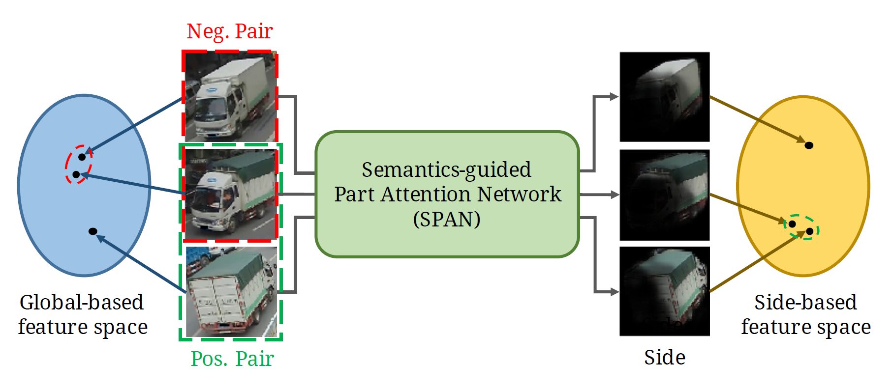

Orientation-aware Vehicle Re-identification with
Semantics-guided Part Attention Network

*This paper has been accepted for publication at ECCV 2020 and selected as an Oral Paper.
Vehicle re-identification (re-ID) focuses on matching images of the same vehicle across different cameras. It is fundamentally challenging because differences between vehicles are sometimes subtle. While several studies incorporate spatial-attention mechanisms to help vehicle re-ID, they often require expensive keypoint labels or suffer from noisy attention mask if not trained with expensive labels. In this work, we propose a dedicated Semantics-guided Part Attention Network (SPAN) to robustly predict part attention masks for different views of vehicles given only image-level semantic labels during training. With the help of part attention masks, we can extract discriminative features in each part separately. Then we introduce Co-occurrence Part-attentive Distance Metric (CPDM) which places greater emphasis on co-occurrence vehicle parts when evaluating the feature distance of two images. Extensive experiments validate the effectiveness of the proposed method and show that our framework outperforms the state-of-the-art approaches.
Keywords: Vehicle re-identification, spatial attention, semantics-guided learning, visibility-aware features
@inproceedings{SPAN,
author = {Chen, Tsai-Shien and Liu, Chih-Ting and Wu, Chih-Wei and Chien, Shao-Yi},
title = {Orientation-aware Vehicle Re-identification with Semantics-guided Part Attention Network},
booktitle = {European Conference on Computer Vision},
year = {2020}
}
Github link: https://github.com/tsaishien-chen/SPAN
The demonstration of some examples of the part masks generated by SPAN. Note that the demonstrated vehicles are all in different colors, types and orientations to verify the robustness of SPAN.
The comparison of generated part masks with previous works, including Wang (left) [ICCV'17] and VAMI (right) [ECCV'18]. The attention maps generated by their methods are directly from their papers.
The comparison of performance of re-identification with the state-of-the-art methods on two large-scale vehicle re-ID datasets: VeRi-776 and CityFlow-ReID datasets.